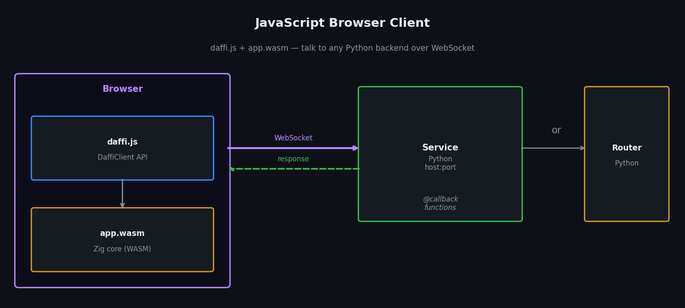

JavaScript Client¶

daffi ships a browser JavaScript client (daffi.js) backed by a precompiled WebAssembly module (app.wasm) that speaks the native daffi wire protocol over WebSocket.
Both files live in js-client/ of the repository and are also distributed via jsDelivr CDN.
How it works¶
- The browser loads
daffi.jsand fetchesapp.wasm. DaffiClient.connect()opens a WebSocket to the Python backend (Service or Router) and performs the daffi handshake through the WASM core.- Every
rpc()/cast()call goes through the WASM message builder, is sent over the WebSocket, and the response is decoded back through WASM.
The Python side sees the browser as a regular daffi Client — no special configuration needed.
Loading from CDN¶
daffi.js is hosted on jsDelivr automatically from the GitHub repository.
app.wasm is fetched automatically from the same CDN release — you do not need to host or specify it yourself.
<!-- daffi.js client library (pinned to release 2.0.0) -->
<script src="https://cdn.jsdelivr.net/gh/600apples/daffi@2.0.0/js-client/daffi.js"></script>
<!-- Optional: msgpack-lite (only needed for serde: "msgpack") -->
<script src="https://unpkg.com/msgpack-lite/dist/msgpack.min.js"></script>
DaffiClient API¶
Constructor¶
// Explicit name:
const client = new DaffiClient(name, options);
// Auto-generated name (e.g. "localhost-0x3f9a12bc"):
const client = new DaffiClient(options);
| Parameter | Type | Default | Description |
|---|---|---|---|
name |
string |
"hostname-0x<random>" |
Unique name for this browser client. When omitted, a name is generated automatically from location.hostname + a random 32-bit hex suffix. |
options.wsUrl |
string |
required | WebSocket URL of the Python backend. No default — must always be provided explicitly (e.g. "ws://127.0.0.1:5000"). |
options.autoreconnect |
boolean |
false |
Reconnect automatically when the server drops the link. |
options.reconnectDelay |
number (ms) |
2000 |
Base delay before the first retry. Doubles after each failure, capped at 60 s. |
Note
app.wasm is loaded automatically from the CDN release that matches the daffi.js version — there is no wasmPath option.
client.connect() → Promise<Connection>¶
Performs the daffi handshake and returns a Connection object.
client.stop()¶
Close the connection permanently (no auto-reconnect, even if autoreconnect is enabled).
client.addEventHandler(fn)¶
Subscribe to server-side events. The handler receives { type, member }.
client.addEventHandler(event => {
console.log(event.type, event.member);
// "connected" "worker-A"
// "disconnected" "worker-A"
});
Connection methods¶
All four call styles mirror the Python API exactly.
conn.rpc(options) — one target, blocking¶
| Option | Type | Default | Description |
|---|---|---|---|
receiver |
string |
"" |
Pin to a specific worker name. |
timeout |
number (ms) |
null |
Reject if no reply within this time. |
serde |
"json" | "msgpack" | "raw" |
"json" |
Serialisation format. |
conn.rpc_nowait(options) — one target, fire-and-forget¶
Same options as rpc() — timeout is ignored.
conn.cast(options) — all workers, collect results¶
Broadcasts to every connected worker that exposes the function.
Returns a Promise<{ workerName: result, … }> dict — exactly like the Python cast().
const results = await conn.cast({ timeout: 5000 }).ping();
// → { "worker-A": "pong from worker-A", "worker-B": "pong from worker-B" }
| Option | Type | Default | Description |
|---|---|---|---|
receiver |
string \| string[] |
null |
Restrict to these worker names. null = all. |
timeout |
number (ms) |
null |
Per-peer timeout. |
serde |
string |
"json" |
Serialisation format. |
conn.cast_nowait(options) — all workers, fire-and-forget¶
conn.cast_nowait({ serde: "json" }).notify("shutdown");
// Partial broadcast
conn.cast_nowait({ serde: "json", receiver: ["worker-B"] }).notify("targeted");
conn.stream(options)¶
Alias for rpc_nowait(). Accepts generator functions for OPAQUE streaming:
conn.stream({ serde: "raw" }).pipe(function* () {
yield new Uint8Array([0x01, 0x02]);
yield new Uint8Array([0x03, 0x04]);
});
conn.waitForMembers(members, options?) — synchronise on worker availability¶
In a multi-worker environment the browser often connects before all Python workers
are online. waitForMembers() blocks (async) until every listed worker name
appears in the Router's member registry, then resolves. This lets you open
the page and start the workers in any order without adding manual delays or
error-retry loops.
const conn = await client.connect();
// Wait until 'py-worker' is registered — resolves as soon as it connects.
await conn.waitForMembers('py-worker');
// The worker is guaranteed to be online now.
const result = await conn.rpc({ receiver: 'py-worker', timeout: 5000 }).process(7);
Multiple workers:
// All three must be online before proceeding.
await conn.waitForMembers(['worker-A', 'worker-B', 'worker-C']);
const results = await conn.cast({ timeout: 5000 }).ping();
With a deadline:
// Raises an Error after 30 s if not all workers appeared.
await conn.waitForMembers(['worker-A', 'worker-B'], { timeout: 30000 });
| Option | Type | Default | Description |
|---|---|---|---|
members |
string \| string[] |
— | Worker name(s) to wait for. |
options.timeout |
number (ms) | null |
null |
Max wait in ms. null = wait forever. |
options.interval |
number (ms) |
1000 |
Poll interval in ms. |
Serialisation formats¶
serde value |
Description |
|---|---|
"json" | 1 |
JSON (default). Works with any JS-serialisable value. |
"raw" | 0 |
OPAQUE. Pass a Uint8Array or string; receive raw bytes. |
"msgpack" | 3 |
Binary MessagePack. Requires msgpack-lite loaded before daffi.js. |
Note
PICKLE (2) is Python-only and is not supported in the JS client.
Automatic reconnection¶
Pass autoreconnect: true (and optionally reconnectDelay) when you want the
client to reconnect silently after a server restart. The WASM module is
compiled once and reused — only the WebSocket is replaced on each attempt.
const client = new DaffiClient("browser-caller", {
wsUrl: "ws://127.0.0.1:6001",
autoreconnect: true, // reconnect automatically after disconnect
reconnectDelay: 2000, // first retry after 2 s; then 4 s, 8 s … (max 60 s)
});
const conn = await client.connect();
// conn reads the current connNum at call time — after a transparent reconnect
// the same conn object routes through the new connection automatically.
const result = await conn.rpc({ timeout: 5000 }).multiply(6, 7);
When a disconnect is detected, socket.onclose fires and the scheduler
retries with exponential back-off. Outstanding RPC promises are rejected
immediately; new calls made after a successful reconnect use the fresh
connection.
Use client.stop() to close intentionally — this suppresses the
auto-reconnect loop.
Securing the connection¶
Authentication and confidentiality are delegated to TLS — there is no
application-level password. Run the Python backend with tls=True
(plus cert_file / key_file) and connect from the browser using a
wss:// URL:
const client = new DaffiClient("my-app", { wsUrl: "wss://example.com:5000" });
const conn = await client.connect();
The browser will refuse the upgrade unless the server presents a certificate that chains to a CA the browser already trusts.
Examples¶
| Example | Directory | Description |
|---|---|---|
| Service — JSON | js-client/examples/01_service_json/ |
Browser calls a Python Service with JSON. |
| Service — MSGPACK | js-client/examples/02_service_msgpack/ |
Same, using binary MSGPACK. |
| Router — JSON | js-client/examples/03_router_json/ |
Browser → Router → Python worker (JSON). |
| Router — MSGPACK | js-client/examples/04_router_msgpack/ |
Same, using binary MSGPACK. |
| cast() | js-client/examples/05_cast/ |
Broadcast to 3 workers, display result dict. |
| cast_nowait() | js-client/examples/06_cast_nowait/ |
Fire-and-forget broadcast to 3 workers. |
| waitForMembers() | js-client/examples/07_wait_for_members/ |
Block until a Python worker is online before calling it. |
Running an example¶
- Start the Python backend for the example, e.g.:
- Open
js-client/examples/01_service_json/index.htmldirectly in your browser.
Minimal HTML template¶
<!DOCTYPE html>
<html lang="en">
<head>
<meta charset="UTF-8">
<title>daffi demo</title>
<!-- app.wasm is fetched automatically from the same CDN release -->
<script src="https://cdn.jsdelivr.net/gh/600apples/daffi@2.0.0/js-client/daffi.js"></script>
</head>
<body>
<script>
(async () => {
// wsUrl is required — there is no default
const client = new DaffiClient("browser-client", {
wsUrl: "ws://127.0.0.1:5000",
});
const conn = await client.connect();
const result = await conn.rpc({ timeout: 5000 }).add(3, 4);
console.log("add(3, 4) =", result); // 7
})();
</script>
</body>
</html>